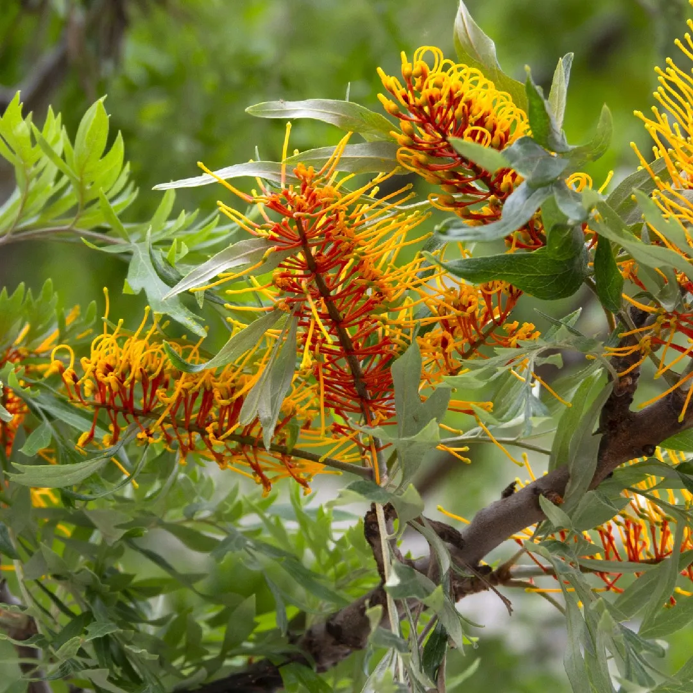
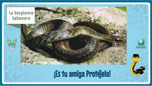
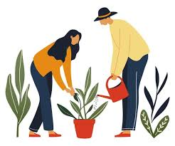

que es flora y fauna

Flora La flora se refiere al conjunto de plantas que crecen en un área determinada. Esto incluye no solo los árboles y arbustos, sino también hierbas, flores, helechos y musgos. La flora puede variar según el clima, la altitud y el tipo de suelo de una región. La diversidad de plantas es esencial para los ecosistemas, ya que proporcionan oxígeno, alimentos y hábitats para otros organismos. Fauna La fauna se refiere al conjunto de animales que habitan en un área específica. Esto abarca todos los tipos de animales, desde mamíferos y aves hasta reptiles, anfibios, insectos y peces. La fauna juega un papel crucial en el equilibrio de los ecosistemas, ya que cada especie tiene una función, como polinizar plantas, controlar plagas o descomponer materia orgánica. En resumen, la flora se enfoca en las plantas y la fauna en los animales. Ambos son componentes vitales de la biodiversidad y contribuyen al funcionamiento de los ecosistemas..
flora
Flora La flora de Chocontá se caracteriza por su gran diversidad, que incluye: Bosques Andinos: Los bosques de niebla son comunes en las zonas montañosas. Aquí crecen especies como el arrayán y el pino colombiano. Este tipo de bosque es crucial para la regulación del clima y la conservación del agua. Entre los árboles de gran tamaño se encuentran caracoles y cedros, que proporcionan hábitats para diversas especies. Vegetación de Sabanas y Pastizales: En las áreas más bajas, predominan los pastizales, que son utilizados para el pastoreo de ganado. Esta vegetación incluye gramíneas y arbustos de menor tamaño. Cultivos Agrícolas: Chocontá es conocida por su agricultura. Los cultivos de caña de azúcar, café, frutas (como el banano y la guanábana) y hortalizas son fundamentales para la economía local. Estos cultivos a menudo coexisten con la vegetación nativa, creando un mosaico de ecosistemas. Orquídeas y Plantas Nativas: La región alberga una variedad impresionante de orquídeas, destacando su diversidad y belleza. Estas plantas son un indicador de la salud del ecosistema y son valoradas tanto ecológica como estéticamente..
fauna
conservación
La riqueza de flora y fauna de Chocontá enfrenta diversas amenazas, incluyendo la expansión agrícola, la deforestación y el cambio climático. Es fundamental implementar prácticas de conservación y desarrollo sostenible para proteger estos ecosistemas. Iniciativas comunitarias y programas de educación ambiental son esenciales para promover la conciencia sobre la importancia de preservar la biodiversidad en la región. En resumen, Chocontá no solo es un lugar de gran belleza natural, sino también un ecosistema vital que sostiene una variedad de vida. La conservación de su flora y fauna es crucial para el bienestar ambiental y la calidad de vida de sus habitantes. .